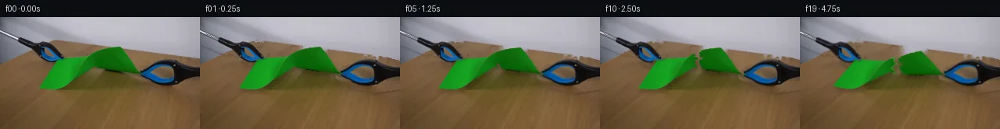

![首帧]()

Round 00
2026-11-04T22:27:32.114650+00:00像素候选变化代码 +266/−0inspection 更新
pixels 293b697298cde124 · code 9e694f80b66283e9
查看本轮 generate.py 真实 diff
--- previous/generate.py +++ current/generate.py @@ -0,0 +1,266 @@ +#!/usr/bin/env python3 +"""Generate a source-pixel animation of green paper tearing between two grabbers.""" + +from pathlib import Path +import math + +import cv2 +import numpy as np +from PIL import Image, ImageDraw + +import artifact_io + + +ROOT = Path(__file__).resolve().parent +W, H = 256, 144 + + +def smoothstep(x): + x = np.clip(x, 0.0, 1.0) + return x * x * (3.0 - 2.0 * x) + + +def largest_component(mask): + count, labels, stats, _ = cv2.connectedComponentsWithStats(mask.astype(np.uint8), 8) + if count <= 1: + return mask.astype(np.uint8) + label = 1 + int(np.argmax(stats[1:, cv2.CC_STAT_AREA])) + return (labels == label).astype(np.uint8) + + +def affine_about(pivot, angle_deg, dx=0.0, dy=0.0, sx=1.0, sy=1.0): + """Return a forward affine transform with separate scales around a pivot.""" + a = math.radians(angle_deg) + c, s = math.cos(a), math.sin(a) + # OpenCV image-coordinate form, matching getRotationMatrix2D. + A = np.array([[c * sx, s * sy], [-s * sx, c * sy]], np.float32) + p = np.asarray(pivot, np.float32) + b = p + np.array([dx, dy], np.float32) - A @ p + return np.column_stack([A, b]).astype(np.float32) + + +def warp_layer(rgb, mask, matrix, interp=cv2.INTER_LINEAR): + image = cv2.warpAffine( + rgb, matrix, (W, H), flags=interp, borderMode=cv2.BORDER_CONSTANT, borderValue=0 + ) + alpha = cv2.warpAffine( + mask.astype(np.float32), matrix, (W, H), flags=cv2.INTER_LINEAR, + borderMode=cv2.BORDER_CONSTANT, borderValue=0, + ) + return image, np.clip(alpha, 0.0, 1.0) + + +def composite(dst, src, alpha): + a = np.clip(alpha, 0.0, 1.0)[..., None] + return np.clip(dst.astype(np.float32) * (1.0 - a) + src.astype(np.float32) * a, 0, 255) + + +def add_shadow(frame, mask, dx, dy, sigma, opacity): + shifted = np.zeros((H, W), np.float32) + ix, iy = int(round(dx)), int(round(dy)) + x0, x1 = max(0, ix), min(W, W + ix) + y0, y1 = max(0, iy), min(H, H + iy) + sx0, sx1 = max(0, -ix), min(W, W - ix) + sy0, sy1 = max(0, -iy), min(H, H - iy) + shifted[y0:y1, x0:x1] = mask[sy0:sy1, sx0:sx1] + blurred = cv2.GaussianBlur(shifted, (0, 0), sigma) + shade = (1.0 - opacity * np.clip(blurred, 0.0, 1.0))[..., None] + return np.clip(frame * shade, 0, 255) + + +def make_masks(src): + y, x = np.mgrid[:H, :W] + r, g, b = [src[..., i].astype(np.int16) for i in range(3)] + paper_roi = (x >= 44) & (x <= 186) & (y >= 31) & (y <= 99) + green = paper_roi & (g > 52) & (g > r * 1.17) & (g > b * 1.18) & ((g - r) > 18) + paper = largest_component(cv2.morphologyEx(green.astype(np.uint8), cv2.MORPH_CLOSE, np.ones((3, 3), np.uint8))) + # Recover antialiased green perimeter without swallowing the wood or gray wall. + near = cv2.dilate(paper, np.ones((3, 3), np.uint8), iterations=1).astype(bool) + rim = near & paper_roi & (g > r * 1.08) & (g > b * 1.08) & ((g - r) > 8) + paper = (paper.astype(bool) | rim).astype(np.uint8) + + gray = cv2.cvtColor(src, cv2.COLOR_RGB2GRAY) + blue = (b > r + 12) & (b > g - 2) & (b > 52) + dark = gray < 105 + left_poly = np.zeros((H, W), np.uint8) + right_poly = np.zeros((H, W), np.uint8) + cv2.fillPoly(left_poly, [np.array([[0, 15], [46, 29], [83, 34], [86, 55], [69, 63], [37, 49], [0, 33]], np.int32)], 1) … diff truncated; 179 more lines …